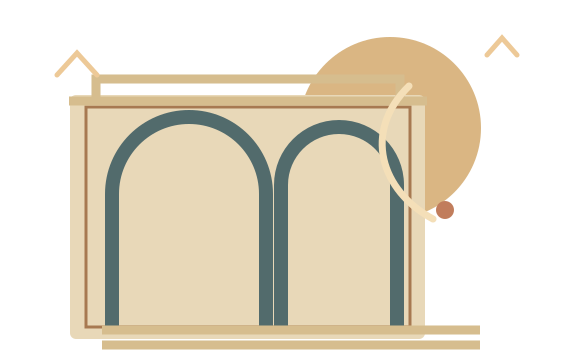

Renaissance
Humanism, artistic perspective, classical learning, printing, and the protection of knowledge.
HUM 202 · A living collection
Exploring the Renaissance, the Early Modern World, and the nineteenth century through cultural essays, visual art, music, and personal reflection.
Explore the portfolio
The historical periods
Each section has its own cultural essay and a curated set of artwork analyses. Musical selections appear where assigned.
Humanism, artistic perspective, classical learning, printing, and the protection of knowledge.
Faith, empire, science, revolutions, Baroque art and music, and questions of conscience.
Napoleon, nationalism, Romanticism, industrial change, and changing forms of artistic expression.
Learning beyond the classroom
Essays connecting literature, leadership, conscience, and morality to decisions and experiences in my own life.
Leadership
Reflecting on Machiavelli and the responsibilities of effective leaders.
Read essay →Forgiveness
Shakespeare's The Tempest and the choice to forgive without ignoring harm.
Read essay →Conscience
Washington's Farewell Address, religious liberty, and civic responsibility.
Read essay →About this portfolio. This site collects work created for HUM 202. The essays and analyses reflect my interpretations and learning; referenced artworks are credited to their creators and their linked sources. View the research sources and image credits.